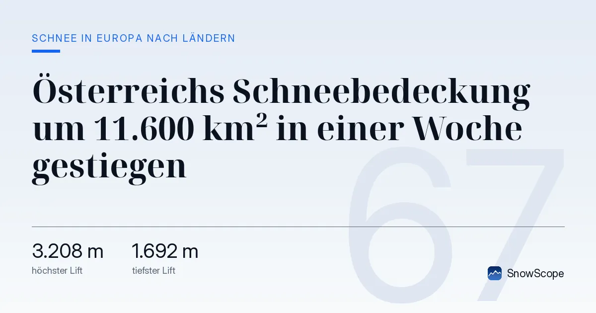
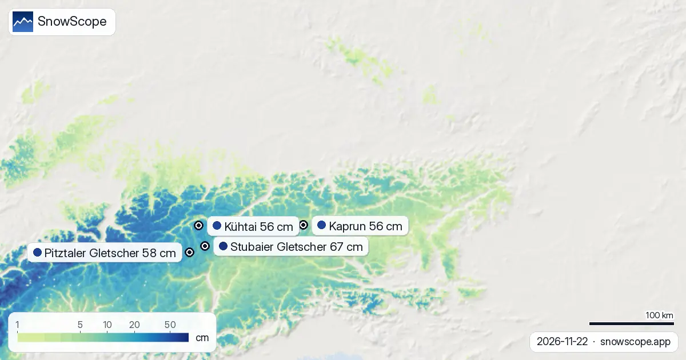
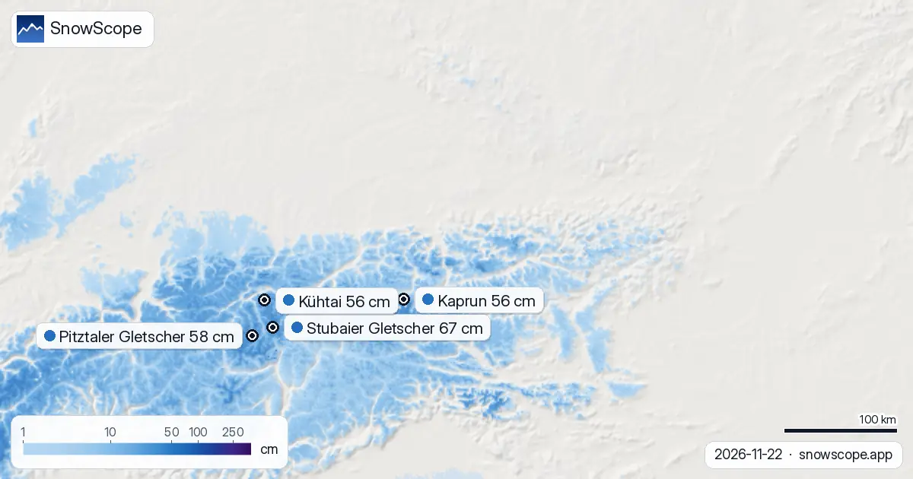

Österreichs Schneebedeckung um 11.600 km² in einer Woche gestiegen
Österreichs Schneebedeckung hat sich in der vergangenen Woche mehr als verdoppelt – von 19.720 km² auf 31.340 km² – als ein feuchtes Tiefdrucksystem über die Alpen zog. Stubaier Gletscher führt mit 67 cm an, mit starken Zugewinnen auf allen Hochgletschern und den westlichen Gipfeln Vorarlbergs.
Die Live-Schneeprognose für Stubaier Gletscher in der SnowScope-AppSchneehöhen, Pulverschnee-Alarme und 3D-Karte, gratis.
Die Rangliste: Gletscher setzen sich ab
Stubaier Gletscher führt mit 67 cm an, davon 25 cm in den letzten drei Tagen. Pitztaler Gletscher folgt dicht dahinter mit 58 cm (28 cm Neuschnee), und Kühtai belegt den dritten Platz mit 56 cm (29 cm Neuschnee). Diese drei Gletscherskigebiete liegen nun deutlich vor den tiefergelegenen Skiorten. Diedamskopf ganz im Westen auf 2.056 m ist mit 53 cm in den vierten Platz gesprungen – ein Anstieg, der durch die 44 cm getrieben wurde, die in 72 Stunden in Vorarlberg fielen.
Bemerkenswert ist nicht die absolute Tiefe, sondern die Geschwindigkeit. Vor einer Woche trugen die meisten dieser Gipfel nur die Hälfte ihres jetzigen Schnees. Das feuchte Muster, das Mitte November begann, hat die Saison in den Hochalpen zurückgesetzt, obwohl die tieferen Täler größtenteils schneefrei bleiben.
| Tag | Weiße Fläche | Max. Neuschnee in 3 Tagen | Schneereichstes Skigebiet |
|---|---|---|---|
| Montag, 16. November | 19.550 km² | 4 cm | Kaprun |
| Dienstag, 17. November | 17.500 km² | 6 cm | Kaprun |
| Mittwoch, 18. November | 18.140 km² | 14 cm | Stubaier Gletscher |
| Donnerstag, 19. November | 25.170 km² | 19 cm | Stubaier Gletscher |
| Freitag, 20. November | 22.850 km² | 26 cm | Rifflsee |
| Samstag, 21. November | 29.110 km² | 30 cm | Stubaier Gletscher |
| Sonntag, 22. November | 31.340 km² | 38 cm | Stubaier Gletscher |

Eine Woche, 11.600 km² Zugewinn
Das Satellitenbild erzählt eine dramatische Geschichte. Am 15. November hatten nur 19.720 km² Österreichs messbaren Schnee. Heute sind es 31.340 km². Das ist ein Zugewinn von 11.620 km² in nur sieben Tagen – ein Sprung um 59 Prozent. Schnee bedeckt nun 60 Prozent der modellierten Alpen im Land.
Die Ausbreitung war ungleichmäßig. Vorarlberg im Westen erhielt in 72 Stunden 58 cm, der stärkste Schneefall überall. Die Ötztal-Alpen, Heimat von Stubaier und Pitztaler, sahen im gleichen Zeitfenster 36 cm. Im Vergleich dazu erhielt Kaprun in den tieferen Hohen Tauern in drei Tagen nur 11 cm und rangiert fünften Platz. Das Muster zeigt, wie Bergposition und Exposition die Gaben des Sturms formten.

Wo der Schnee nach Höhe liegt
Höhe ist jetzt der Hauptfaktor. Unter 1.000 m ist Schnee fast abwesend: mittlere Tiefe ist null und Bedeckung nur 11 Prozent. Bei 1.000 bis 1.500 m beginnt Schnee zu bleiben (4 cm Mittel, 75 Prozent Bedeckung), aber Felsen und Vegetation zeigen noch durch. Über 1.500 m ändert sich das Bild. Der Streifen 1.500 bis 2.000 m trägt durchschnittlich 12 cm bei voller Bedeckung. Bei 2.000 bis 2.500 m erreicht die mittlere Tiefe 21 cm. Über 2.500 m tragen die Gletscher und Hochgipfel 32 cm oder mehr.
Die Schneegrenze liegt heute bei 1.000 m. Das ist typisch für November. Skifahrer, die durchgehende Bedeckung suchen, müssen über 1.500 m hochsteigen, und die besten Bedingungen sind über 2.000 m, wo der Winter gut etabliert ist.
Was in den letzten drei Tagen fiel
Zwischen 20. und 22. November fielen maximal 38 cm über die kartierte Fläche, wobei 23.050 km² mindestens 5 cm erhielten. Das ist frischer, unruhiger Schnee oben auf frühere Fälle. Die westlichen Skigebiete nahmen das meiste ab: Diedamskopf in Vorarlberg sah 44 cm, und die Ötztal-Gletscher dicht dahinter. Kaprun, 300 km östlich und tiefer, sah 11 cm.
Diese 72-Stunden-Fälle setzen sich noch. Frühe Saisonsschnee ist oft leicht und kann Felsen oder dünnes Eis darunter verbergen. Die Tiefenmessungen von SnowScope sind Schätzungen für jeden Bereich; an steilen Hängen oder in der Nähe von Graten kann der tatsächliche Schnee dünner oder dicker sein.
Was kommt als nächstes
Mehr Schnee ist in der Vorhersage, obwohl die Vorhersage nicht so extrem ist wie die letzten drei Tage. In den nächsten drei Tagen erwartet das Modell bis zu 15 cm. Morgen, 23. November, sollte der schneereichste einzelne Tag mit 11 cm sein. In sieben Tagen könnte die Summe 25 cm erreichen, größtenteils fallend zwischen jetzt und 25. November.
Ende November und Anfang Dezember könnte die zweite Woche (Tage 8 bis 14) 30 cm Schnee sehen. Das würde der neuen Basis weitere Höhe hinzufügen. Vorerst sind die Gletscherskigebiete die sichere Wette; tiefere Orte sind noch marginal und am besten nach dem nächsten Fall zu fahren.
Das größere Bild
Verglichen mit dem üblichen Novemberschnee zu diesem Zeitpunkt läuft Österreich leicht unter normal. Stubaier Gletscher trägt 40 cm gemessen auf 2.450 m, trägt aber normalerweise zu diesem Datum 50 cm. Pitztaler Gletscher liegt bei 110 Prozent der Norm, der stärkste Performer. Diedamskopf liegt bei 193 Prozent seiner gewöhnlichen Frühjahrstiefe, ein starker Start für einen westlichen Ort.
Nachbarn erzählen eine ähnliche Geschichte. Die Schweiz ist weißer (71 Prozent Bedeckung), aber Deutschland hat nur 23 Prozent. Das feuchte System bevorzugte die Hochalpen gegenüber tieferen Regionen. Nutze SnowScopes Karte, um die aktuelle Schneetiefe an deinem gewählten Skiort zu finden.
Tipps für Skifahrer
- Fahr über 1.500 m, um durchgehenden Schnee zu fahren. Unter dieser Höhe ist die Bedeckung fleckig und Felsen sind freigelegt.
- Gletscherskigebiete halten den besten Schnee: Stubaier Gletscher, Pitztaler Gletscher und Kühtai überschreiten alle 55 cm und bieten das sicherste Frühjahrs-Skifahren.
- Erwarte mehr Schnee von jetzt bis 25. November. Die Bedingungen werden besser, aber aktuelle Basen sind noch frühjahrsbedingt dünn; bleib weg von Klippen und freiem Gelände.
- Wenn du Off-Piste-Fahrten planst, prüfe den offiziellen Lawinenbericht für deine Region. Frischer nasser Schnee an steilen Hängen trägt im November Risiko.
- Wenn du einen Besuch in Diedamskopf in Vorarlberg planst, läuft es zu diesem Zeitpunkt deutlich über normal; bedenkenswert für eine schnelle Mittwochfahrt vor der nächsten Kälteperiode.
Zu diesen Zahlen
Die Schneehöhen der Skigebiete sind der meiste Schnee in den oberen Hängen laut SnowScope-Schneemodell (etwa 1 km, Lauf vom 22. November); es sind Schätzungen für eine Fläche, keine Messung an einem Punkt. Werte von Messstationen sind Messungen am angegebenen Tag. Prognosen können sich ändern. Lies vor dem Freeriden immer den offiziellen Lawinenlagebericht.
Diesen Bericht zitieren
Für Forschung, Lehre oder Presse: Zahlen und Grafiken sind unter CC BY 4.0 mit dieser Quellenangabe frei nutzbar.
SnowScope (2026), Österreichs Schneebedeckung um 11.600 km² in einer Woche gestiegen, https://snowscope.app/blog/de/2026/11/austria-snow-cover-gain-this-week-22-november-2026.html, abgerufen am 2026-11-22
SnowScope (Atlas Labs). (2026, November 22). Österreichs Schneebedeckung um 11.600 km² in einer Woche gestiegen. SnowScope snow reports. https://snowscope.app/blog/de/2026/11/austria-snow-cover-gain-this-week-22-november-2026.html
BibTeX
@misc{snowscope2026austriasnowcovergainthis,
author = {{SnowScope (Atlas Labs)}},
title = {Österreichs Schneebedeckung um 11.600 km² in einer Woche gestiegen},
year = {2026},
month = nov,
howpublished = {\url{https://snowscope.app/blog/de/2026/11/austria-snow-cover-gain-this-week-22-november-2026.html}},
note = {Published 2026-11-22 11:56 UTC; accessed 2026-11-22}
}· CC BY 4.0 · Methoden, Daten und Werkzeuge →
Stubaier Gletscher: Schnee und Temperatur nach Höhe, dieser Winter vs letzter (Werkzeuge) →
Stubaier Gletscher folgen
Gratis: eine Nachricht, wenn Neuschnee kommt, und jeden Morgen die Vorhersage.